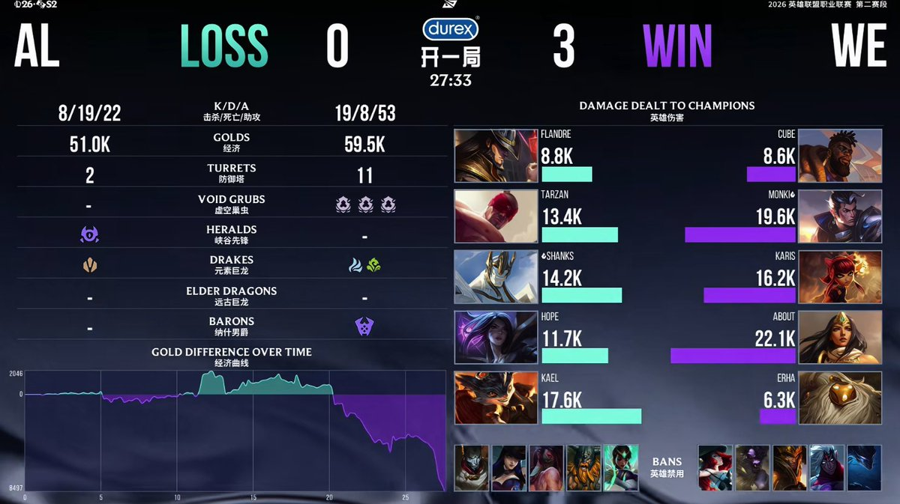

WE目前的情况是刚刚找到了自己的核心点和正确方向，以至于爆发出惊人的力量。也正是利用这一点，WE打了一个信息差。BLG JDG AL这些头部战队们都只了解变化前的WE，但不了解刚刚改变后的WE，而WE则非常了解一直没有变化的那些队伍。这就是信息差。我不是说WE不强，就现在表现来说，是绝对的强，但能不能稳定住这个方向，还要继续观望，甚至要看看第三赛段。我不希望WE像去年第二赛段只爆发了一两场就又泯了，以至于第三赛段查无此人。我反倒希望WE真能保持住这个感觉，因为LPL真的太缺新气象了！
